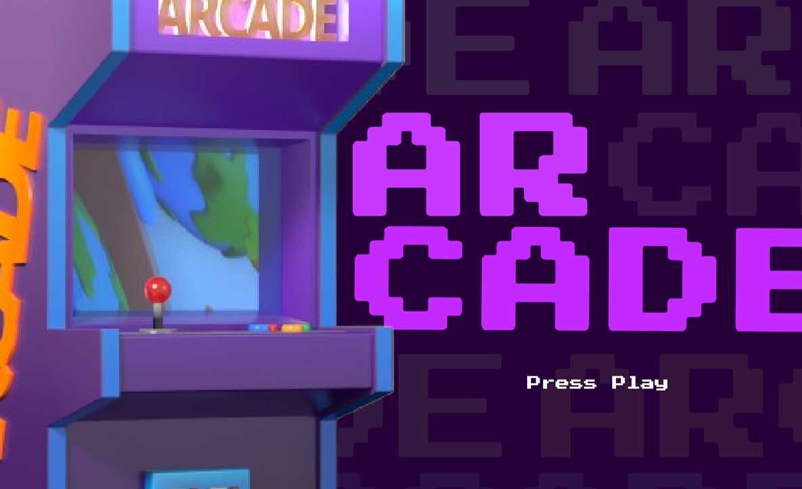

The Journey is a mini game created using Bitsy, where the player guides the character on his journey to the castle. The character faces obstacles and challenges but completed the journey to the castle.
Check game on itch.io
the journey
The Journey is a mini game created using Bitsy, where the player guides the character on his journey to the castle. The character faces obstacles and challenges but completed the journey to the castle.
Check game on itch.io
the arcade



Arcade is a game that features the classic 'catch-it' style mini-game housed in a retro arcade. Dodge the obstacles and play with different difficulties.
Check game on itch.io